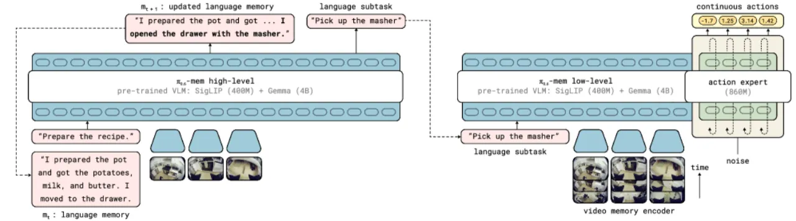
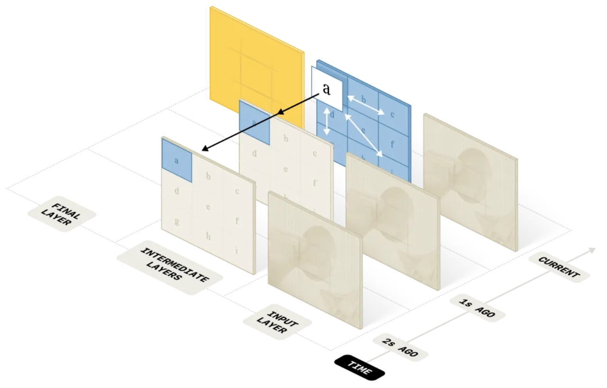
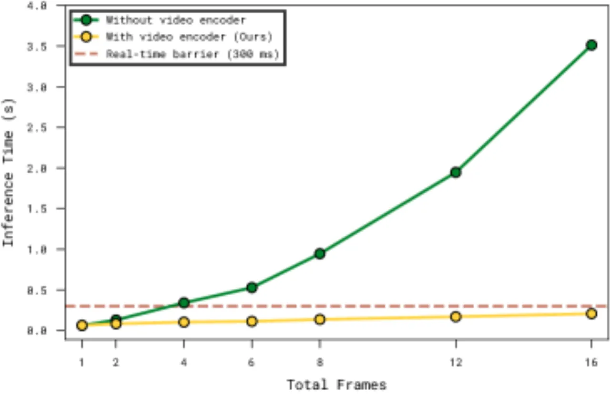
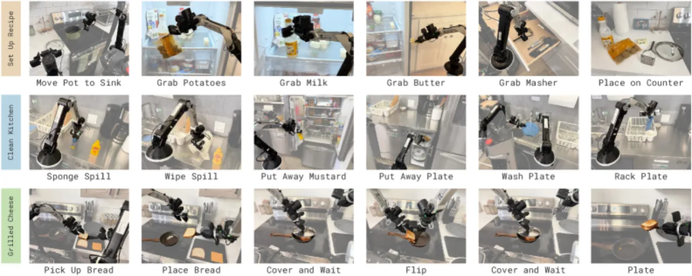
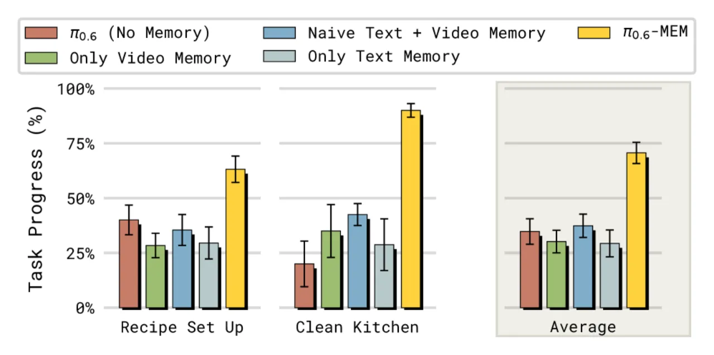
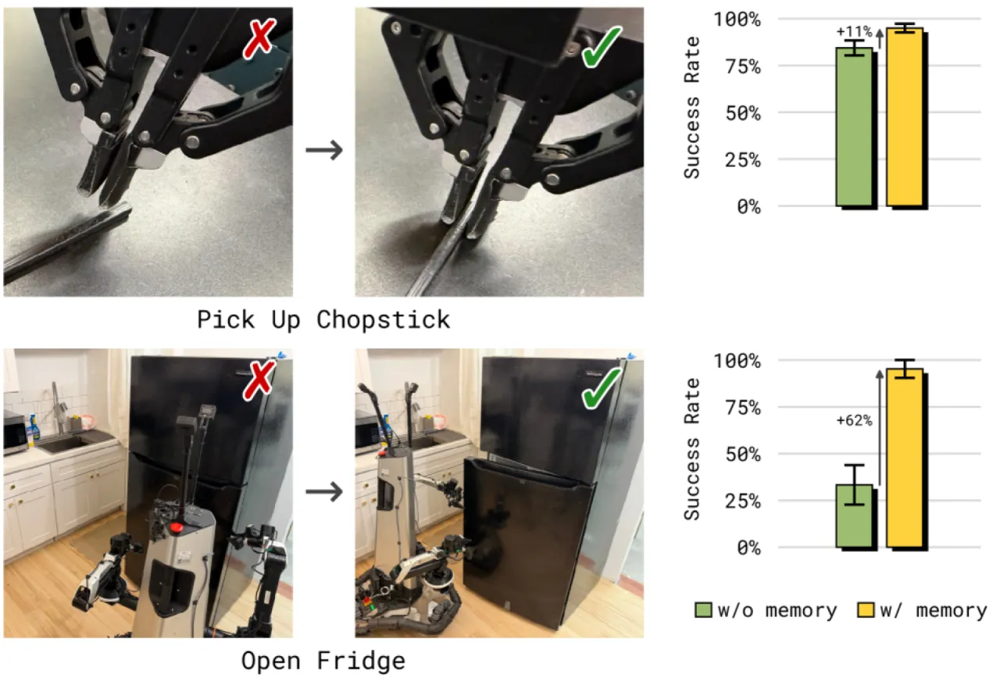
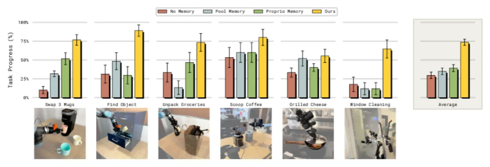

MEM 为 VLA 模型引入两级记忆机制：一个高效的视频编码器提供短时观测记忆（short-horizon video memory），使策略能感知近几十秒内的局部操作细节；一个基于语言的长时记忆（long-horizon language memory）由高层策略维护，通过 LLM 压缩语义事件，跟踪任务进展与高层上下文。两者结合使机器人策略能完成长达 15 分钟的复杂操作任务，同时保持实时推理延迟。
现有 VLA 模型（如 π₀.₆）在处理单步或短时操作任务时表现出色，但面对需要数分钟乃至十余分钟记忆的长时程任务时，性能急剧下降。它们缺乏一种既能捕捉细粒度局部操作动作、又能跟踪宏观任务状态的记忆机制。
"Effective robotic memory should operate across multiple levels of abstraction: a short-horizon memory to track recent observations at a fine-grained level, and a long-horizon memory to track the state of a task at a semantic level." — 论文核心论点

核心挑战在于：简单地将多帧图像拼接送入 VLA backbone 会导致推理延迟急剧增加，无法满足实时控制需求；而仅依赖文本记忆则无法捕捉精细的操作细节（如擦拭表面的时间长短、当前抓握状态等）。MEM 通过两级异构记忆的组合解决这一矛盾。
MEM 由两个互补的记忆模块组成：基于高效视频编码器的短时观测记忆（short-horizon video memory）处理近期细粒度观测；基于 LLM 压缩的长时语言记忆（long-horizon language memory）在更长的时间跨度上追踪任务语义状态。两者分别由低层策略和高层策略使用。

视频编码器将标准 ViT 扩展为视频输入：在不引入任何新可学习参数的前提下（仅修改 attention 模式 + 固定正弦时序位置编码），每隔第 4 层插入一次 space-time separable attention。该设计将计算复杂度从朴素多帧拼接的 O(n²K²) 降至 O(Kn² + nK²)，其中 K 为帧数，n 为每帧 patch 数。

高层策略维护一个自然语言记忆 mₜ，由一个 off-the-shelf 预训练 LLM 在每个子任务结束后负责更新与压缩。LLM 接收子任务指令序列及其成功/失败标记，输出精炼后的语言记忆，去除冗余细节，仅保留对未来决策有用的语义信息。
"Instead of remembering the precise attributes of all objects that were manipulated ('I put a light green bowl, a dark blue bowl and a bright yellow bowl into the top right cabinet'), it is often sufficient to just remember where the bowls were placed ('I placed three bowls in the top right cabinet')." — 论文对语言压缩机制的举例说明
这种压缩设计还解决了训练-推理分布偏移问题：训练时每个子任务指令通常只出现一次，而推理时策略可能反复失败并重试同一子任务，导致朴素拼接语言指令的方式分布失配。压缩记忆始终维持一个紧凑、语义丰富的历史摘要，避免了这一问题。

实验在真实机器人平台上进行，评估 MEM 在长时程任务、in-context 适应、核心记忆能力及非记忆任务（基线对比）四个维度的表现。基线包括：π₀.₆（无记忆）、Pool Memory（历史帧池化）、Proprio Memory（本体感知记忆）以及 Naive Language Memory（未压缩的语言拼接）。

消融分析揭示了两级记忆各自的贡献：


MEM 在不需要记忆的灵巧操作任务（衬衫折叠、搭建积木、收拾餐桌等）上，与 state-of-the-art 无记忆 VLA π₀.₆ 表现持平，表明引入记忆模块不会损害模型的通用操作能力。
在多样化机器人及非机器人视频数据上进行预训练对 MEM 的记忆利用能力至关重要：仅进行 post-training 而跳过预训练的 MEM，平均任务成功率约为 45%，而完整预训练后约为 75%，差距显著。这表明视频编码器需要从广泛的视频-语言数据中学习通用的时序表征。
论文结论明确指出："We believe that MEM is only the first step towards building robot policies that can effectively manage very long-horizon memory. Future work can explore how we can scale memory to last beyond the horizon of a single episode, to span weeks, months, or years of deployment." 目前 MEM 的记忆仅覆盖单次任务执行期间，无法跨 episode 积累经验。
长时语言记忆的更新由高层策略触发，需要子任务级别的语言标注（成功/失败标记）。这对标注质量和高层策略的可靠性有一定依赖，若子任务识别出错，记忆更新可能引入噪声。
实验表明，跳过预训练会导致约 30% 的性能下降。这意味着 MEM 的有效性高度依赖多样化机器人及非机器人视频数据的预训练，在数据受限场景下可能难以复现相同效果。
论文展望未来工作将探索"allow us to build robots that learn continually at deployment time"，表明 MEM 当前版本尚不支持部署时在线学习与记忆更新。